1. Илюстрация на процеса
2. Описание на използваните математически понятия
3. Сравняване на алгоритми
ü Коректен и пълен код
ü Входни данни – действителни, случайни, лоши данни
ü За да сравняваме различни алгоритми за една и съща задача
ü За да предвиждаме производителността в нова среда
ü За да задаваме стойности на параметрите на алгоритъма
1. Избор на абстрактни операции
2. Моделиране на входа:
ü Среден случай
ü Най-лош случай
Главен параметър N – пропорционален на размера на обработваните данни (степен на полином, размер на файл или масив, брой символи в низ и др.)
Най-често срещани функции при оценка времето на работа на алгоритъма:
ü 1 – времето за работа на алгоритъма е константа
ü logN – логаритмично време при разделяне задачата на малки подзадачи
ü N – линейно време – всеки входен елемент се обработва по малко
ü NlogN – задачата се разделя на подзадачи, всяка от които се решава независимо, а после решението се обединява
ü N2 – квадратично време – например обработване на всички двойки от данни (2 вложени цикъла)
ü N3 – кубично време – аналогично с тройки от данни
ü 2N – експоненциално време – решения с груба сила
|
секунди |
|
|
102 |
1.7 мин. |
|
104 |
2.8 часа |
|
105 |
1.1 дни |
|
106 |
1.6 седмици |
|
107 |
3.8 месеца |
|
108 |
3.1 години |
|
109 |
3.1 десетилетия |
|
1010 |
3.1 века |
|
1011 |
Никога (3.1 хилядолетия) |
Други функции:
ü N3/2 - алгоритъм с вход N2 и време за изпълнение пропорционално на N3, се описва като алгоритъм от степен N3/2.
ü Nlog2N – задачи с 2 етапа на разбиване на подзадачи
Ще означаваме двоичния логаритъм по следния начин: log2NºlgN
ëxû - закръгляне надолу
éхù - закръгляне нагоре
élgNù - брой на битовете в двоичното представяне на N
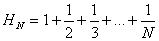 - хармонични числа (дискретизирана версия на lnN)
Дефиниция 1. За функцията g(N) се казва, че е O(f(N)), ако съществуват константи c0 и N0 такива, че g(N)<c0f(N) за всяко N>N0.
Приложения на О:
ü За ограничаване на грешката, която допускаме, пренебрегвайки малките членове във формулите
ü За ограничаване на грешката, която допускаме, пренебрегвайки части от програмата, които имат малко значение за цялостния анализ
ü За класифициране на алгоритмите по горната граница на времето им за работа
Пример: (N+O(1)) (N+O(logN)+O(1))=
=N2+O(N)+O(N logN)+O(logN)+O(N)+O(1)»
» N2+O(N logN) – асимптотичен израз (с 1 член О)
Пример: Даден е алгоритъм с 2 цикъла: вътрешен (изпълнява се средно по 2NHN пъти) и външен (изпълнява се N пъти) и инициализация (изпълнява се 1 път). Нека всяка итерация на вътрешния цикъл изисква а0 наносекунди, външния – а1 наносекунди, а инициализацията – а2 наносекунди. Тогава общо времето за работа е t=2a0NHN+a1N+a2= 2a0NHN+O(N)
HN=lnN+O(1)
t=2a0NlnN+O(N)
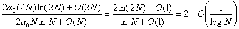
1. CN=CN-1+N, за N³2 при С1=1 (програми, които циклят входа, за да премахнат 1 елемент)
CN=CN-1+N=
=CN-2+(N-1)+N=
= CN-3+(N-2)+(N-1)+N=
…
=C1+2+…+(N-2)+ (N-1)+N=
=1+2+…+(N-2)+ (N-1)+N=
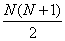
2. CN=2CN/2+1, за N³2 при С1=1 (програми, които разполовяват входа на всяка стъпка)
CN=O(lgN). Предполагаме N=2n
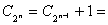
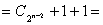
…
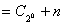
=n+1
3. CN=CN/2+N, за N³2 при С1=0 (програми, които разполовяват входа на всяка стъпка, но вероятно трябва да изследват всички елементи във входа)
CN=N+N/2+N/4+….=O(2N)
4. CN=2CN/2+N, за N³2 при С1=0 (програми, които обхождат линейно входа и го разполовяват на всяка стъпка), например алгоритми “разделяй и владей”
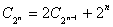
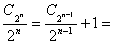
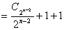
…
=n
Примери за анализ на алгоритми:
1. Последователно търсене
int search (int a[], int v, int l, int r)
{ for (int i=l; i<=r; i++)
if (v==a[i]) return I;
return –1;
}
при неуспешно търсене – N елемента; при успешно – средно по N/2
2. Двоично търсене
int search (int a[], int v, int l, int r)
{ while (r>=l)
{ int m=(l+r)/2;
if (v==a[m]) return m;
if (v<a[m]) r=m-1;
else l=m+1;
}
return –1;
}
изследват се не повече от ëlgNû+1 числа
3. Сортиране чрез селекция
const int size=100;
int min_position (int a[], int from, int to)
{ int min_pos=from;
for (int i=from+1; i<=to; i++)
if (a[i]<a[min_pos]) min_pos=i;
return min_pos;
}
void selection_sort (int& a[])
{ for (int next=0; next<size; next++)
{ int min_pos=min_position (a, next, size-1);
if (min_pos!=next)
{ int temp=a[min_pos];
a[min_pos]=a[next];
a[next]=temp;
}
}
}
Общ брой операции:
n+2+(n-1)+2+….+2+2=
=n+(n-1)+…+2+(n-1)2=
=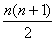-1+(n-1)2=
=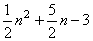=O(n2)
4. Сортиране чрез сливане
void merge (int& a[], int from, int mid, int to)
{int n=to-from+1, b[size];
int i1=from, i2=mid+1;
int j=0;
while (i1<=mid and i2<=to)
{if (a[i1]<a[i2])
{b[j]=a[i1];
i1++;
}
else { b[j]=a[i2];
i2++;
}
while (i1<=mid)
{ b[j]=a[i1];
i1++;
j++;
}
while (i2<=to)
{ b[j]=a[i2];
i2++;
j++;
}
for (j=0, j<size; j++)
a[from+j]=b[j];
}
void merge_sort (int& a[], int from, int to)
{ if (from==to) return;
int mid=(from+to)/2;
merge_sort(a, from, mid);
merge_sort(a, mid+1, to);
merge(a, from, mid, to);
}
Брой операции: O(n lgn)